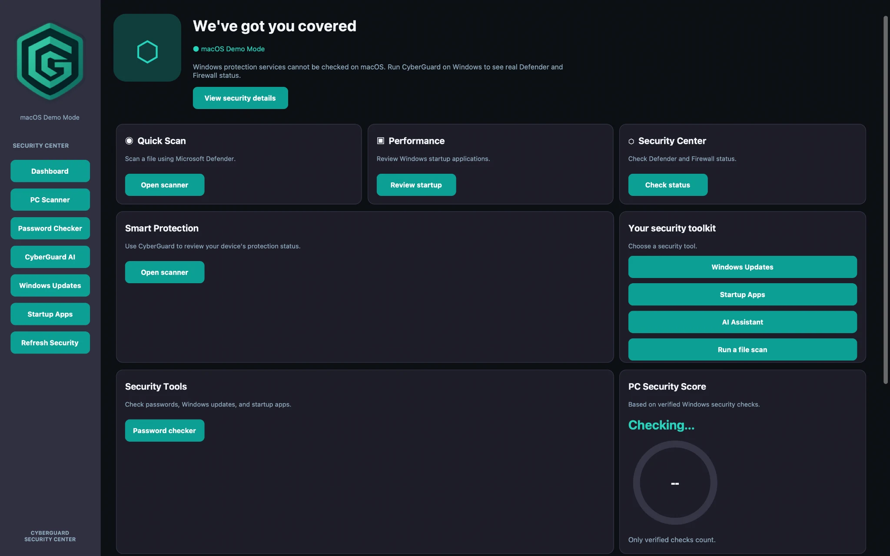

Security dashboard
Find your protection tools and review available Windows security checks from one starting point.
Meet a clearer way to understand your computer's protection. Scan files, check passwords, review Windows security and explore your tools — all in one place.

CyberGuard brings essential computer-security tools together in an interface that's easier to navigate and understand.
Find your protection tools and review available Windows security checks from one starting point.
Access supported Microsoft Defender scanning features through CyberGuard on Windows.
Evaluate password strength locally and get guidance for creating stronger passwords.
Get assistance through the app's local AI experience, powered by Ollama when configured.
Review available Windows update status information without hunting through menus.
View common Windows startup entries in a straightforward, read-only interface.
Six actual screens from CyberGuard. Select a preview to see the full-size screenshot.
Screenshots were captured in macOS Demo Mode. Defender scanning, Windows Updates and startup information require Windows; screenshots do not indicate live protection on this website.
CyberGuard is designed to make computer security easier to understand — especially for people who aren't cybersecurity experts.
Our goal is to bring practical tools into one approachable desktop application, with clear information about what is and isn't supported.
CyberGuard for Windows is being prepared for release. The download will be available once the Windows build has been tested.
CyberGuard is a desktop security center that brings scanning, password-strength checking, Windows status tools and an optional local AI assistant into one interface.
No. CyberGuard uses supported Microsoft Defender functionality for Windows scans. It is not a replacement for an antivirus engine.
The app's password-strength checker is designed to run locally without uploading or saving the entered password.
No. The screenshots shown here were captured in macOS Demo Mode. Windows-specific security checks and scanning require Windows.
The local AI assistant uses Ollama and requires the relevant local setup and model to be available.
The Windows installer is not yet published. The download section will be updated after testing is complete.